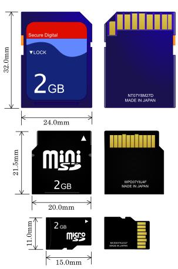

TF 闪存卡速度参速率参数说明
条评论关于 TF 卡最低写入速率的 4 种规范 / 标准的说明。
SD 卡和 TF 卡
Secure Digital 全名为 Secure Digital Memory Card，中文直译为 安全数码卡，官方一般将之缩写为 SD。SD 卡的技术是建基于 MultiMediaCard 格式上。由 SD Association（SDA，SD 协会）推出。SD 卡分为 SD、miniSD、microSD 三种规范。

SD|SDHC|SDXC
SD 协会官方定义的 3 种等级的速率标准，由于分别应用于 3 种尺寸不同的 SD 卡，故 3 种卡分别以此命名。
SDHC=SD High Capacity，SDXC=SD Extended Capacity
历史
microSD 卡原本称为 TF 卡（T-Flash 卡或 TransFlash），由摩托罗拉和闪迪共同研发，在 2004 年推出。不过闪迪无法自行将它推广普及化，前期仅有摩托罗拉的手机支持 TransFlash。为了能将销路完全拓展，于是闪迪将 TransFlash 规格并入 SD 协会，成为 SD 家族产品之一，造就了目前使用最广泛的手机存储卡。TF 卡重命名为 microSD 是并入 SD 协会的妥协。
近几年 TF 卡这种历史称呼逐渐盖过 microSD 卡成为主流，可能是其名字更简短，也可能是厂商在背后发力，谁又知道呢。
性能标示规范
常见的 TF 卡最低写入速率规范 / 标准共有 3 种，这里做个统一说明。
Speed Class
SD 卡提供不同的速率，它是按 CD-ROM 的 150KB/s 为 1 倍速（记作“1x”）的速率计算方法来计算的。
SD2.0 的规范中对于 SD 卡的性能上分为如下若干等级：
- Class 0
包括低于 Class 2 和未标注 Speed Class 的情况； - Class 2
能满足观看普通 MPEG4 MPEG2 的电影、SDTV、数码摄像机拍摄； - Class 4
可以流畅播放高清电视（HDTV），数码相机连拍等需求； - Class 6
满足单反相机连拍和专业设备的使用要求； - Class 10
满足更高速率要求的存储需求。
注：Class 等级是按 8KB/s 换算的，Class 4 最低写入速率为 4MB/s，Class 10 表示最低写入速率为 10MB/s
UHS Speed Class
UHS-1 表示支持 UHS (Ultra High Speed, 超高速)接口，其带宽达到 104MB/s。但是这个速度只代表总线规格，并不代表闪存内部速率。
Video Speed Class
Video Speed Class 定义了录制高解析度和高画质 (4K/8K) 视频的需求，同时也具备支持下一代闪存（如 3D NAND）的重要功能。此外，Video Speed Class 也把录制 HD (2K)的视频速度整合在其中。
不同速率 TF 卡的具体应用


参考文献
[1] 维基百科成员.SD 卡[EB/OL].https://zh.wikipedia.org/wiki/SD 卡,2020-09-26.
[2]KevinTan9.SD 卡分类与速度等级[EB/OL].https://www.cnblogs.com/KevinTan9/p/12205668.html,2020-01-17.
[3]Huatai Huang.SD/TF 卡速度等级[EB/OL].https://cloud-atlas.readthedocs.io/zh_CN/latest/arm/hardware/sd_tf_card_speed_class.html,2019.